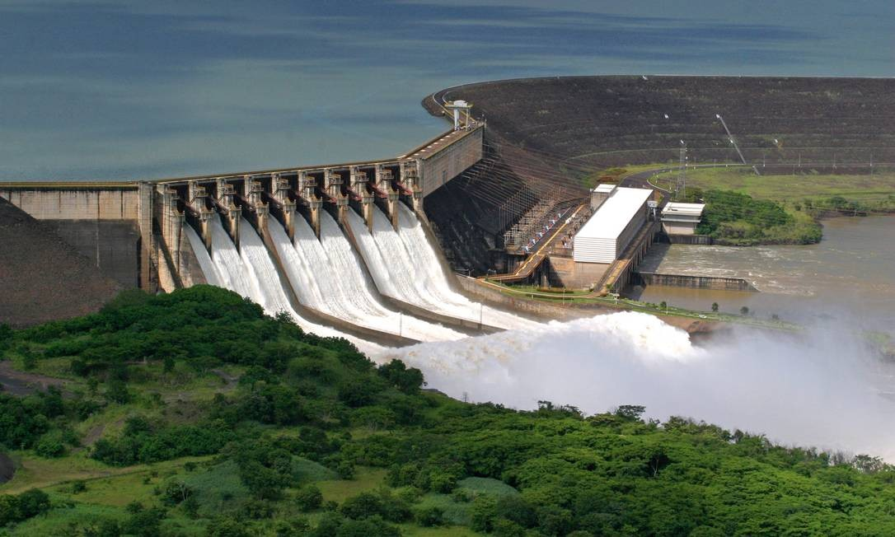
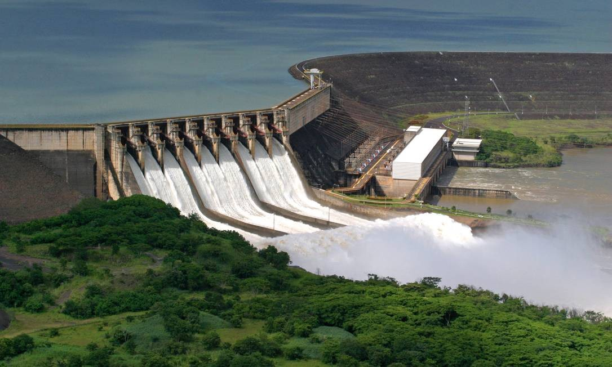

Bem-vindo à Ecoenergia!
As energias limpas estão em pleno desenvolvimento, devido à atual crise das energias esgotáveis. Com isso em mente, seu objetivo é providenciar as mesmas vantagens e conforto de suas equivalentes mais poluentes, enquanto causam menor impacto ambiental. Por isso, há grande foco em diminuir a emissão de gás carbônico na atmosfera, porém cada qual com seus próprios métodos para alcançar tal objetivo.
 

Qual é a importância do investimento em energia sustentável?
O mundo é feito de recursos finitos. Há uma quantidade determinada de cobre a ser descoberto que, uma vez cessada, não poderá ser encontrada novamente; o mesmo ocorre com o lítio; finalmente, a mesma lógica pode ser aplicada às fontes de energia não-renováveis como, por exemplo, o carvão. O investimento em energia sustentável visa, de um ponto de vista econômico, mitigar a inevitável falta de recursos por exploração humana no decorrer dos próximos anos.
Porém, há muito mais em jogo do que isso:
- Preservação do meio ambiente;
- Combate aos problemas de saúde relacionados às mudanças climáticas;
- Garantia de acesso à energia elétrica de forma a incrementar a soberania nacional;
- Preocupação com a qualidade de vida das gerações futuras.
A energia sustentável (frequentemente idealizada como energia limpa e acessível) seria, portanto, uma das soluções mais influentes para o combate às mudanças climáticas no mundo, visto que sua implementação adequada reduziria os gases do efeito estufa. Ela afetaria positivamente também a empregabilidade, pois novos empregos seriam criados graças à alta demanda de mão-de-obra especializada.